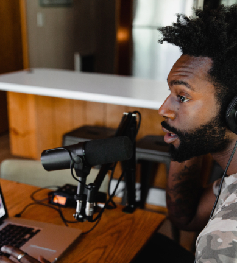

Home
Episodes
About
Contact
Take your podcast to the
next
level
Listen on
Latest episodes
View all episodes
Gear
Episode 3
Should you get outboard audio gear?
Is hardware really worth it when it comes to podcasting? The answer is...it depends. Here’s our reasons on why you might want to consider picking something up.
View Episode Details
Tips & Tricks
Episode 2
Mic tricks to take you to the next level
Stop rolling with those default settings on your mic. These small tweaks will take you from sounding good to great.
View Episode Details

Gear
Episode 1
The best microphone under $200
With so many microphones on the market, how are you supposed to know what’s the best? Take a look at our top picks.
View Episode Details